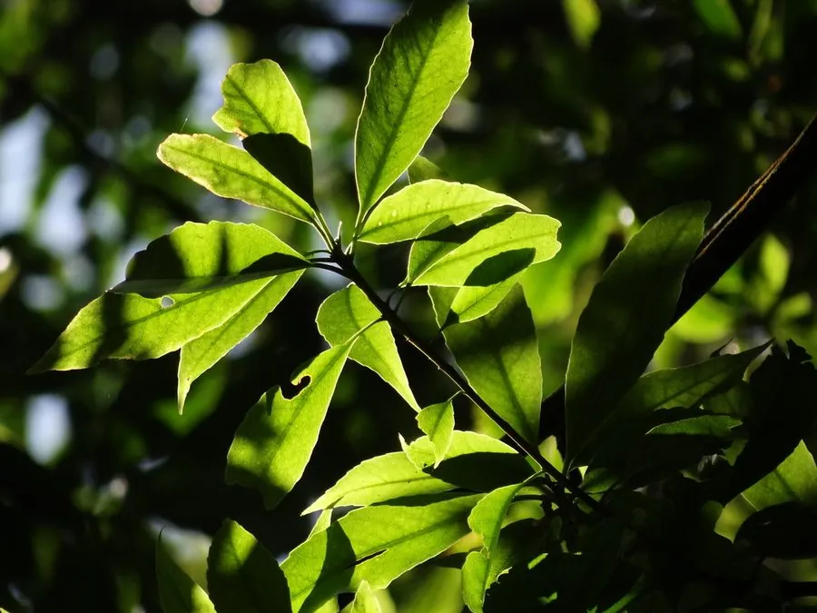

乔木 · 植物界
木荷 Schima superba

中国南方常绿阔叶林的主要树种，夏季开白色小花，叶片厚革质、含水量高，是重要的防火树种与用材树。
- 分类
- 门被子植物门纲木兰纲目杜鹃花目科山茶科属木荷属
- 栖息环境
- 海拔 1500 米以下的丘陵山地与常绿阔叶林，喜温暖湿润
- 地理分布
- 中国长江流域以南及华南、西南各省区
- 保护级别
- 暂无评估；中国未列入国家重点保护野生植物名录
物种志
木荷为常绿乔木，高可达 25 m，树皮灰褐色、纵裂；叶片互生，椭圆形至长圆形，厚革质，边缘全缘或疏生细锯齿，叶面深绿有光泽。花期 6–8 月，花单生于叶腋或组成顶生总状花序，花白色，花瓣 5 枚，花心有黄色雄蕊，芳香；蒴果扁球形，直径约 1.5 cm，成熟时木质化并开裂，种子扁平、具翅。
木荷分布于中国长江流域以南及华南、西南的丘陵山地，喜光、喜温暖湿润，适宜深厚肥沃的酸性红壤，常与马尾松、杉木、栲类混生，是南方常绿阔叶林的主要组成树种。木材坚硬、纹理直、耐腐，是建筑、家具与纺织器材的良材；树皮可提取栲胶，也可入药；叶片含水量高、不易燃，是营造生物防火林带的优良树种。木荷花期长、花量多，也是优良的蜜源植物。
形态与习性
- 株高可达 25 m，树皮灰褐色纵裂
- 花期6–8 月，花白色芳香
- 果期10–11 月，蒴果扁球形
- 光照喜光，幼树稍耐阴
- 水分喜湿润，怕积水
- 土壤深厚肥沃的酸性红壤
- 主要用途建筑与家具用材、防火林带、树皮提取栲胶
趣味知识
- 木荷叶片厚革质、含水量高，不易燃烧，是营造生物防火林带的优良树种。
- 木荷夏季开白色小花，花心有黄色雄蕊，是优良的蜜源植物。
- 木荷木材坚硬耐腐，是南方建筑、家具与纺织器材的常用良材。
- 木荷常与马尾松、杉木混生，是南方常绿阔叶林的主要树种之一。